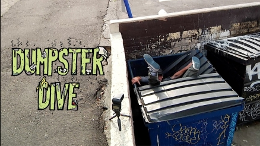
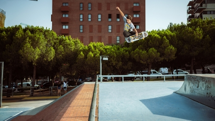
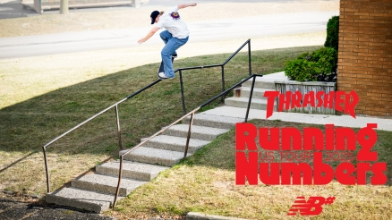

Vídeo de Antihero "Buceo en el contenedor de basura" Antihero rebusca en la basura y desentierra un tesoro, desde los potentes fragmentos iniciales de Finn Pope hasta el emocionante final de Gus Gordon

Parte de "Spitfire" de Daan Van Der Linden Desde el lugar más sagrado de Barci hasta la portada de la revista, Daan desata una tormenta de fuego con su arsenal interminable.

Gira estadounidense 2025 "Running Numbers" de NB Numeric Nos lanzamos a la carretera con New Balance para una gira relámpago por Estados Unidos. Foy, Tiago y el equipo de primera categoría ofrecieron un espectáculo inolvidable, arrasando en cada lugar y demostración a su paso.